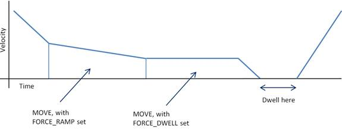

Axis Parameter
FORCE_DWELL AXIS(n) = <value>
FORCE_DWELL can be applied to SP type moves so that the programmed dwell time will occur ahead of the next move in the move buffer. This axis parameter sets a dwell time in milliseconds to take place at the end of the next SP move.
After setting a dwell for a move, it is necessary to set FORCE_DWELL to zero before loading subsequent moves that do not require a dwell.

Dwell time in milliseconds.
A 25 ms pause in the motion is needed at the end of the 3 rd move in a sequence.
SPEED = 100
FORCE_SPEED = 100
ENDMOVE_SPEED = 0
MOVESP(distance1)
MOVESP(distance2)
FORCE_DWELL = 25
MOVESP(distance3)
FORCE_DWELL = 0
MOVESP(distance4)